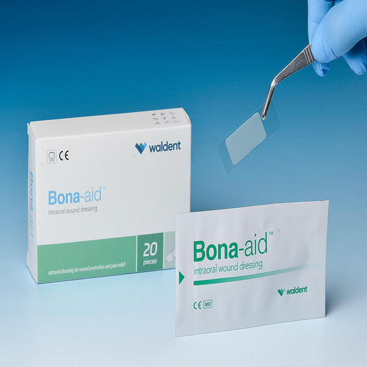
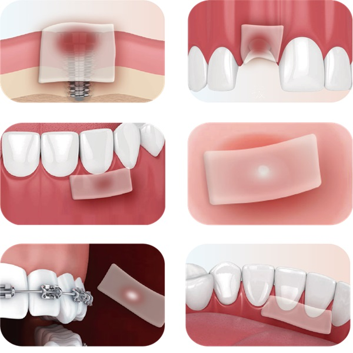

Bona-aid™ intraoral wound patch
Bona-aid™ Bona-aid™ is with the mindset of easy to use, attachable and absorbable intra-oral patch,
Bona-aid™ to bio-safely and comfortably protect the affected wound area such as post implant, extraction, orthodontic, oral surgery site and ulcer sites.
Bona-aid™ is adaptable to almost every kind of oral wound site, including but not limited to:
- - implantation
- - tooth extraction
- - periodontal surgeries

Bona-aid™ intraoral wound patch

Bona-aid™ Fast dressed in mouth, like a bandage
- Can be pasted intra-oral for covering moisture wound effectively
Bona-aid™ Optimal lasting time
- Applied in the oral cavity, directly on mucous
(Upper jaw:12~24hrs / Lower jaw:6~12hrs)
- - Oral infection
- - Orthodontic ulcer
Bona-aid™ intraoral wound patch
Bona-aid™ Protecting wound
- Protecting the wound from external stimuli, therefore preventing secondary infection
Bona-aid™ Pain relief and healing accelerated
- Aids pain relief, protects cure-helping growth factors, protects wound during early wound healing period
- - Oral ulcer
- - Donor site protection